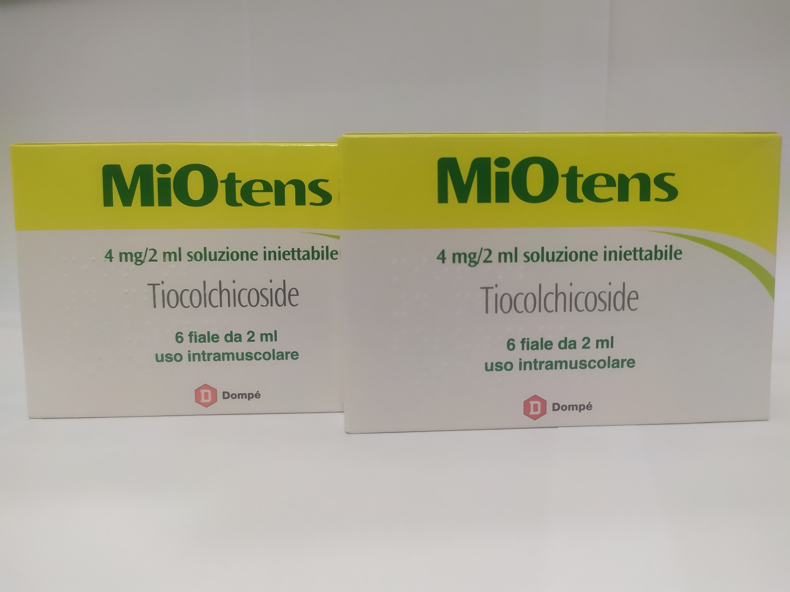

Контактная информация:
Цена: 670 грн/уп.
Под заказ
Производитель: Италия
Цена: 670 грн/уп.
Под заказ
Именно в FarmItal вы можете купить ампулы Миотенс,MiOtens в Украине, Гарантированно Качественный!
Доставка MiOtens,Tiocolchicoside осуществляется транспортными компаниями, сроки выполнения заказа оговариваются менеджером Фармитал. Вы можете заказать ампулы Миотенс,Тиоколхикозид в городах: Одесса, Херсон, Чернигов, Северодонецк, Бердянск, Бровары, Днепр, Винница, Киев, Славянск, Полтава, Краматорск, Белая Церковь, Каменское, Мариуполь, Черновцы, Александрия, Кам Львов, Запорожье, Кропивницкий, Житомир, Ивано-Франковск, Сумы, Черкассы, Константиновка, Мелитополь, Кривой Рог, Ровно, Луцк, Никополь, Павлоград, Ужгород, Кременчуг, Лисичанск, Хмельницкий, Тернополь, Харьков, Николаев, а также в других населённых пунктах Украины.
Ампулы – 4мг/2мл по 6 ампул в упаковке
Адъювантное лечение болезненных мышечных контрактур, при острых заболеваниях позвоночника у взрослых и подростков в возрасте от 16 лет.
Тиоколхикозид — миорелаксант, тормозящий сокращение, используется при ревматических процессах, травмах, для снятия гипертонуса мышц. Действует на ЦНС как антагонист ингибиторного нейромедиатора ГАМК, взаимодействуя высокоселективным образом с габаминергическими рецепторами. Показано также высокое сродство к глицинергическим рецепторам, чувствительным к стрихнину. Высокая активность габаминергических и глицинергических рецепторов и его агонистическое действие на них обоснованно объясняют его тормозное действие на ЦНС, что проявляется снижением мышечного тонуса, то есть действует как миорелаксант.
Способ применения и дозы назначаются врачом в соответствии с личным состоянием больного.
Самолечение может быть вредным для вашего здоровья! Перед началом лечения обратитесь к вашему врачу!!
Тиоколхикозид не следует применять:
Хранить в недоступном для детей месте. Не требует особых условий хранения.